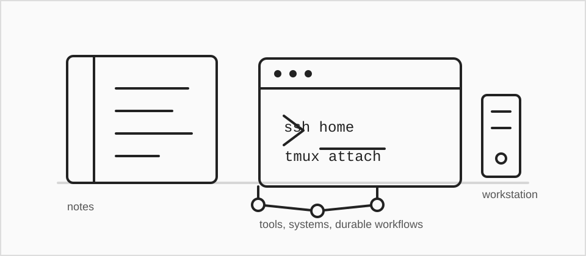

Notes

This is my working notebook for software engineering, developer tools, architecture, AI-assisted development, and the craft of building systems that survive contact with reality.
Posts
-
Git worktrees and the
node_modulestaxWorktrees are excellent for parallel branches and coding agents, but large JavaScript repositories need a sane dependency strategy.
-
Separate Unix users for agentic development
Separate Linux accounts are a practical way to keep AI coding agents, credentials, and development contexts from bleeding into each other.
-
Frictionless remote access to a home Linux workstation
A practical note on making a home Linux workstation feel like private infrastructure without public SSH exposure or VPN ceremony.